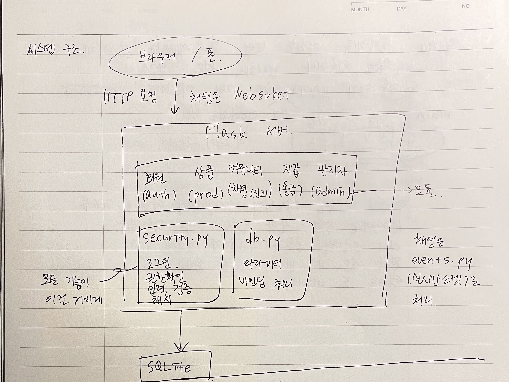
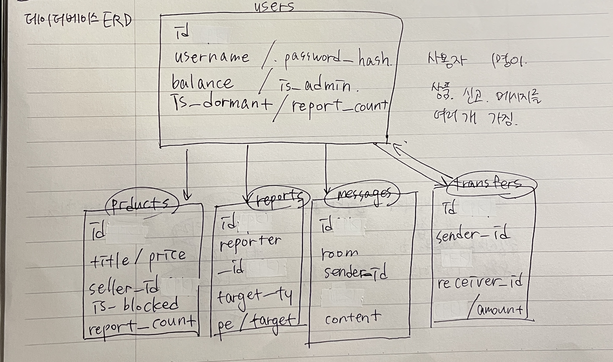
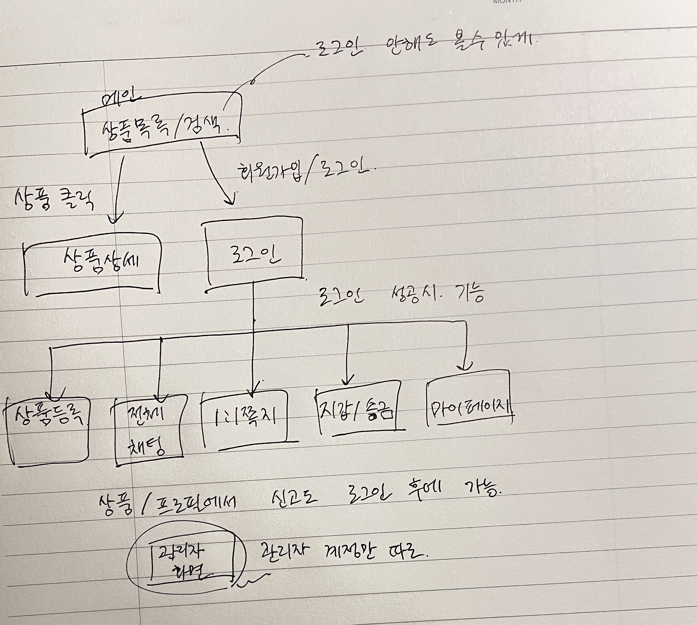

중고 물건을 사고파는 웹사이트다. 이름은 미나리마켓. 회원으로 가입해서 물건을 올리고, 검색해서 구경하고, 채팅으로 흥정하고, 포인트로 값을 주고받는다. 신고랑 관리자 기능도 넣어서 이상한 사람이나 물건은 걸러낼 수 있게 했다.
과제의 진짜 목적이 "보안"이라고 봤기 때문에, 그냥 기능만 돌아가게 만들고 끝내는 게 아니라 "여기가 털리면 어떻게 되지?"를 계속 생각하면서 짰다. 그런데 솔직히 처음부터 전부 완벽하게 짜긴 어려웠고, 그래서 기능을 한 번 다 만든 다음에 보안만 따로 다시 훑는 단계를 뒀다. 실제로 그때 구멍이 꽤 나왔다(뒤에 5번에서 정리).
언어는 파이썬, 웹은 Flask로 했다. 규모가 크지 않아서 무거운 프레임워크는 필요 없다고 봤고, 참고하라고 주신 KISA 파이썬 가이드랑도 맞아서 보안 항목 대조하기 편했다. 데이터는 SQLite — 파일 하나라서 채점하실 때 DB 따로 설치 안 해도 바로 돌아간다. 실시간 채팅은 Flask-SocketIO. 채점 환경이 맥이라길래 별도 세팅 없이도 켜지게 맞춰뒀다. CSRF·요청제한·비번 해시·이미지 검증은 각각 Flask-WTF / Flask-Limiter / bcrypt / Pillow를 썼다.
멘토님이 주신 요구사항이랑 강의자료 설계 항목을 기준으로 필요한 기능을 추렸다. 크게 회원 / 상품 / 채팅 / 신고·차단 / 송금 / 관리자 여섯 덩어리다.
| 영역 | 기능 |
|---|---|
| 회원 | 가입, 로그인·로그아웃, 마이페이지(소개글·비번 변경), 다른 사람 프로필 보기 |
| 상품 | 등록(사진 포함), 목록·상세, 검색, 내 상품 수정·삭제 |
| 채팅 | 전체 실시간 채팅, 1:1 쪽지 |
| 신고·차단 | 상품·사용자 신고(사유 작성), 쌓이면 상품 자동 숨김 / 계정 휴면 |
| 송금 | 사용자끼리 포인트 이체 |
| 관리자 | 사용자·상품·신고를 한 화면에서 관리 |
"약점 없게"가 제일 중요한 조건이라, 기능이랑 별개로 지킬 선을 먼저 정해놓고 시작했다. 비밀번호는 무슨 일이 있어도 원문 그대로 저장 안 한다, 사용자가 보낸 값은 일단 안 믿고 서버에서 다시 검사한다, 남의 것(상품·관리자 화면)엔 손 못 대게 한다, 오류 나도 내부가 안 보이게 한다 — 이 네 개를 계속 붙잡고 갔다.
하다 보니 요구사항을 좀 손보는 게 낫겠다 싶은 게 몇 개 있었다. 바꿀 거면 이유를 남겨달라고 하셔서 적어둔다.
코드 짜기 전에 구조를 손으로 먼저 그려봤다. 아래 세 장이 직접 그린 거다.
브라우저(또는 폰)가 요청을 보내면 Flask 서버가 받고, 기능별로 나눠둔 모듈이 처리한
다음 SQLite에 읽고 쓴다. 로그인·권한확인·입력검사·비번해시 같은 보안 공통 부분은
security.py 한 곳에 몰아뒀다. 이렇게 안 하면 기능마다 따로 처리하다가 한
군데씩 빼먹기 때문이다. 채팅만 일반 요청이 아니라 실시간 소켓(events.py)으로
따로 흐른다.

저장할 걸 표 다섯 개로 나눴다. 사용자 / 상품 / 신고에 더해서 채팅 기록이랑 송금 내역도 각각 남긴다. 한 가지 신경 쓴 건, 각 줄의 id를 1, 2, 3 순번이 아니라 추측 못 할 임의 문자열(UUID)로 준 거다. 순번이면 주소창 숫자만 바꿔서 남의 자료를 넘겨볼 수 있어서다 (5번 ⑥ 참고).

사용자가 화면을 어떻게 오가는지도 그려봤다. 로그인 안 해도 상품 구경은 되지만, 등록·채팅·송금·신고처럼 "내 계정으로 하는 일"은 로그인해야 열린다. 관리자 화면은 관리자 계정만.

원칙 몇 개를 미리 못 박아두면 구현이 안 흔들린다고 봤다. 입력은 "허용된 형태만
통과"시키는 방식으로 검사한다, 로그인·권한 확인은 함수 하나(데코레이터)로 통일해서
모든 화면에 똑같이 건다, 비밀키 같은 민감한 값은 코드에 안 넣고 .env에
빼서 저장소엔 안 올린다 — 이 정도다.
설계대로 기능을 나눠서 만들었고, 파일도 회원/상품/커뮤니티/지갑/관리자로 갈라서 나중에 어디 고칠지 찾기 쉽게 했다. 보안이랑 특히 엮인 부분 몇 개만 짚는다.
비번은 bcrypt로 해시해서만 저장한다. bcrypt는 일부러 계산을 느리게 해서 무작정 대입하는 공격을 어렵게 하고, 값마다 다른 소금(salt)을 자동으로 섞어준다.
def hash_password(plain):
return bcrypt.hashpw(plain.encode(), bcrypt.gensalt()).decode()
쿼리에 값 넣을 때 문자열을 이어붙이지 않고 무조건 ? 자리로 따로 넘긴다.
그러면 입력에 SQL 문법이 섞여 있어도 그냥 값으로만 취급돼서 인젝션이 안 통한다.
관리자 화면 붙는 함수는 전부 아래를 거친다. 로그인만 한 일반 유저가 주소를 직접 쳐도 403으로 막힌다.
def admin_required(view):
@functools.wraps(view)
def wrapped(*args, **kwargs):
user = current_user()
if user is None: return redirect(url_for("auth.login"))
if not user["is_admin"]: abort(403) # 관리자 아니면 컷
return view(*args, **kwargs)
return wrapped
기능을 한 번 다 만든 뒤에 체크리스트 들고 하나씩 다시 봤다. 그때 실제로 나온 약점이랑, 처음엔 어떻게 돼 있었고 어떻게 고쳤는지를 순서대로 적는다. 끝에 KISA/OWASP 어디에 해당하는지도 달아뒀다.
처음엔 빨리 돌려보려고 비번을 사실상 원문으로 저장했다. 이러면 DB 파일 한 번 새는 순간 전원 비번이 그대로 털린다. 점검하면서 제일 먼저 걸려서 bcrypt로 바꿨다.
# 처음 password_hash = password # 고침 password_hash = hash_password(password) # bcrypt + 자동 salt
→ KISA "중요정보 평문 저장", OWASP A02
검색어를 쿼리에 그대로 붙였더니 ' OR '1'='1 같은 걸 넣으면 조건이 무력화됐다.
값을 자리표시자로 분리하고, 검색에 쓰는 % _ 같은 특수문자도 따로 처리했다.
# 처음 sql = f"... WHERE title LIKE '%{keyword}%'" # 고침 query("... WHERE title LIKE ? ESCAPE '!'", (like, like))
→ KISA "SQL 삽입", OWASP A03 · 자동점검 5번
상품 설명이나 채팅을 화면에 그대로 뿌리다 보니 <script>를 적으면 실행됐다.
채팅이 특히 받은 메시지를 innerHTML로 붙이던 게 문제였다. 지금은 출력하는 두
경로 모두에서 태그가 실행되지 않게 했다. 일반 페이지는 템플릿 자동 이스케이프로, 실시간
채팅은 받은 값을 textContent로만 넣어서(절대 innerHTML을 쓰지 않음)
처리한다. 여기에 CSP 헤더까지 붙여 인라인 스크립트 자체가 안 돌게 했다.
# 처음(채팅) box.innerHTML += "<div>" + msg + "</div>"; # 고침 wrap.appendChild(document.createTextNode(msg));
→ KISA "크로스사이트 스크립트", OWASP A03 · 자동점검 4번
비번 변경이나 송금 같은 요청에 확인 장치가 없어서, 로그인해 있는 틈에 다른 사이트가 몰래 요청을 보내게 만들 수 있었다. 모든 폼에 1회용 토큰을 넣고 서버가 검사하게 했다.
<input type="hidden" name="csrf_token" value="{{ csrf_token() }}">
→ OWASP CSRF · 자동점검 3번(토큰 없으면 거부)
처음엔 "없는 아이디 / 비번 틀림"을 나눠서 알려줬는데, 이러면 어떤 아이디가 진짜 있는지 알아낼 수 있다. 시도 횟수 제한도 없어서 비번을 계속 넣어볼 수 있었다. 안내를 하나로 합치고, 5번 틀리면 5분 잠그고, 요청 자체에도 상한을 걸었다.
→ KISA "취약한 인증/세션", OWASP A07
초기엔 상품 수정·삭제할 때 "이게 내 상품 맞나"를 확인 안 해서, 주소창 번호만 바꾸면 남의 상품을 지울 수 있었다. 관리자 화면도 로그인만 하면 들어가졌다. 소유자·관리자 확인을 넣고, 앞에서 말한 대로 id도 순번에서 UUID로 바꿨다.
if product["seller_id"] != user["id"] and not user["is_admin"]:
abort(403) # 내 것도 아니고 관리자도 아니면 컷
→ OWASP A01 · 자동점검 7·8번
확장자만 보고 통과시키면 이름만 .png인 실행 파일을 올릴 수 있다. Pillow로
진짜 이미지인지 열어서 확인하고, 저장할 때 파일 이름을 임의값으로 새로 지어서
(원래 이름에 ../ 같은 게 섞여도 무력화) 저장하게 했다. 용량 상한도 걸었다.
→ KISA "위험한 형식 파일 업로드", OWASP A05
잔액 확인하는 데랑 실제로 깎는 데가 떨어져 있으면, 동시에 두 번 요청이 오면 잔액이 마이너스가 되거나 금액이 중복 처리될 수 있다. 확인→차감→증액→기록을 한 덩어리 (트랜잭션)로 묶고 중간에 문제 생기면 통째로 되돌리게 했다. 음수 송금이랑 자기한테 보내기도 같이 막았다.
db.execute("BEGIN IMMEDIATE")
if sender["balance"] < amount:
db.execute("ROLLBACK"); ... # 잔액 부족이면 되돌림
... 차감 / 증액 / 기록 ...
db.execute("COMMIT")
→ KISA "시간 및 상태(경쟁 조건)" · 자동점검 9·10·11번
세션 쿠키에 보호 옵션을 안 걸면 자바스크립트로 쿠키를 훔치거나(HttpOnly 미설정) 다른 사이트에서 딸려나갈 수 있다. HttpOnly·SameSite를 켜고 HTTPS면 Secure도 켜지게 했다. 로그인 성공하는 순간 세션을 새로 발급해서, 미리 심어둔 세션을 이어받는 공격(세션 고정)도 막았다.
→ KISA "세션 쿠키 설정", OWASP A07
디버그 모드면 예외 났을 때 코드 경로랑 내부 정보가 화면에 그대로 찍힌다. 디버그 끄고, 403·404·500 같은 데 사용자용 안내 페이지를 따로 만들어서 내부가 안 새게 했다.
→ KISA "오류 메시지를 통한 정보 노출", OWASP A05
나중에 상품 사진 여러 장과 채팅 사진 전송을 추가했는데, 여기서도 업로드는 늘 위험한
지점이라 처음부터 신경 썼다. 올라온 파일은 확장자만 보는 게 아니라 실제로 이미지인지
열어서 확인하고(Pillow), 저장할 땐 UUID로 새 이름을 지어 경로 조작을 막는다. 상품은
장수(최대 6장)와 전체 용량 상한을 뒀다. 채팅 사진은 특히, 클라이언트가 보낸 파일명을
그대로 믿으면 ../ 같은 경로로 서버의 다른 파일을 가리킬 수 있어서, 반드시
업로드 전용 경로로 먼저 검증·저장한 뒤 소켓으로는 '검증된 파일명'만 넘기고, 받는 쪽에서도
파일명이 우리가 만든 형식(32자리+확장자)인지와 실제 존재 여부를 다시 확인하도록 했다.
→ KISA "위험한 형식 파일 업로드 / 경로 조작", OWASP A01·A03·A05
점검에서 나온 약점(①~⑩)은 다 고쳤고, 뒤에 사진 기능을 붙일 때도(⑪) 같은 자세로 챙겼다. 재밌었던 건 앞의 약점들이 하나같이 "몰라서"가 아니라 "기능 만드느라 놓쳐서" 생긴 거였다는 점이다. 강의에서 말씀하신 "개발하면서도 무의식적으로 안전하게 짜는 능력"이 왜 필요한지 직접 겪었다. 같은 실수가 또 안 생겼는지 확인하려고 자동으로 검사되는 항목들은 점검 스크립트로 만들어놨다(다음 장).
강의자료 체크리스트 예시를 본떠서 회원가입·상품·채팅·신고·송금·공통 영역별로 "보안
요소가 제대로 들어갔나" 점검표를 만들고 코드랑 하나씩 대조했다. 전체 표랑 결과는
저장소 docs/보안_체크리스트.md에 있고, 다 충족했다.
눈으로만 보면 빠뜨리기 쉬워서, 주요 보안 동작을 실제 요청으로 검사하는 스크립트
(tests/security_test.py)를 만들었다. 서버 켜놓고 돌리면 아래처럼 다 통과한다.
[PASS] CSRF 토큰 없는 요청 거부 [PASS] 상품 설명의 스크립트가 무력화됨 (XSS) [PASS] SQL 인젝션 입력에도 정상 처리 [PASS] 음수 가격 입력 거부 [PASS] 비로그인 사용자의 보호 페이지 차단 [PASS] 일반 사용자의 관리자 페이지 접근 403 [PASS] 잔액 부족 / 자기 자신 송금 거부, 정상 송금 성공 ... ===== 결과: 전 항목 통과 =====
브라우저 두 개, 그리고 컴퓨터랑 폰을 ngrok으로 연결해서 실제로 써봤다. 두 기기에서
채팅이 실시간으로 오갔고, 상품을 세 번 신고하니 자동으로 숨겨졌고, 포인트 충전하고
송금하면 양쪽 잔액이랑 내역에 바로 반영됐다. 자세한 건 docs/테스트_결과.md에 있다.
"돌아가긴 하는데 불편하거나 어딘가 이상한 데 없나" 하고 직접 써보면서 다시 봤고, 문제 있으면 해당 단계로 돌아가서 고쳤다.
솔직하게 남겨둘 것도 있다. 채팅 도배 막는 게 서버 한 대 기준 메모리 방식이라 서버를 여러 대로 늘리면 공용 저장소(Redis 같은)로 옮겨야 한다. 송금은 가상 포인트라 실제 결제는 안 붙였고, 이미지도 서버 폴더에 바로 저장하는 방식이라 실서비스면 외부 스토리지가 맞다.
의뢰받은 중고거래 플랫폼의 최소 요구사항은 다 구현했고, 만드는 내내 보안을 같이 봤다.
무엇보다 기능을 완성한 다음 따로 점검해서 약점을 직접 찾아 고쳤고, 나중에 사진 기능을
붙일 때도 업로드·경로 검증을 처음부터 챙겼다. 같은 실수가
안 반복되게 자동 점검까지 붙였다. 코드는 GitHub 공개 저장소에 있고 README.md만
따라 하면 설치부터 실행, 여러 명 접속까지 그대로 재현된다.
python3 -m venv .venv && source .venv/bin/activate pip install -r requirements.txt cp .env.example .env # SECRET_KEY 채우기 python init_db.py # DB + 기본 계정 python app.py # http://localhost:5001
관리자 admin / admin1234, 데모 hong_gildong / test1234. 나머지는 README 참고.